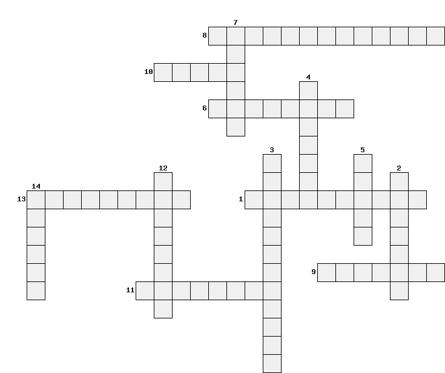

- 1-Чтоб соединить фигуры, Для рисования натуры, без особого сомненья я воспользуюсь
- 2-в пиццерии у пицц есть три разных....
- 3- Если видишь ..., То купи себе паяльник
- 4-шляпка с плоским верхом плоским дном называется...
- 5-Плату делаю по ... получаю одобрение
- 6- как мы проводим исторические параллели, так и этот инструмент проводит их на чертеже
- 7-Все люди любят пиццу большого...., Порции мороженного большого ...
- 8-если сделать ... конуса , то на бумаге будут изображены два треугольника и круг
- 9-для того чтобы нарисовать молекулу или самолет на листе бумаги используют его...
- 10-Если сделать ... конуса , то на бумаге будут изображены два треугольника и круг
- 11- название остроконечного дома всех фараонов?
- 12-На одном из славянских языков эта наука пишется как rysunek
- 13-Щёточка для ресниц из мира черчения
- 14- 2260 лет назад ученый Эратосфен Киренский впервые в мире вычислил ... Земли